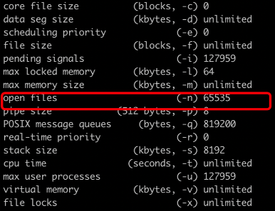
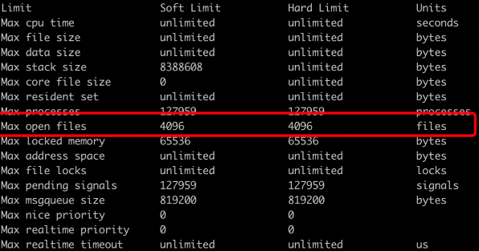

Kafka Service Restart
background
Some Kafka processes restarted and the error was reported as follows:
java.io.IOException: Too many open files
at sun.nio.ch.ServerSocketChannelImpl.accept(ServerSocketChannelImpl.java:422)
at sun.nio.ch.ServerSocketChannelImpl.accept(ServerSocketChannelImpl.java:250)
at java.lang.Thread.run(Thread.java:748)
position
Check the current user's open files through ulimit -a, which is 65535

Further check the open files of the Kafka process (location/proc/$pid/ulimits) is 4096

The two configurations are different because the Kafka process is started by systemd and the configuration used is different from the current user. The configuration file location is:
/usr/lib/systemd/system/kafka.service
LimitNOFILE=65535
Reload the systemd configuration after modification
systemctl daemon-reload
Restart Kafka process
systemctl restart kafka
Check /proc/$pid/ulimits to confirm it takes effect.